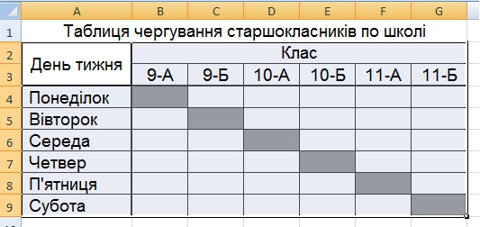
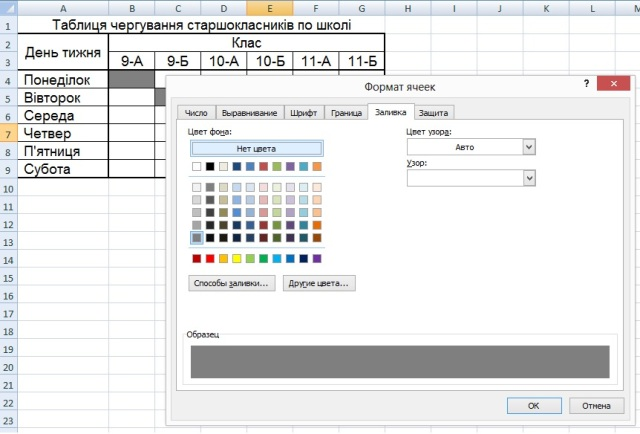

Вправа 1.2. Створення таблиці чергування
Створимо таблицю чергування старшокласників по школі. Після введення та форматування даних таблиця має набути такого вигляду, як рис. 1.24.

Pис. 1.24. Електронна таблиця з відомостями про чергування
Pис. 1.24. Електронна таблиця з відомостями про чергування
- Запустіть програму Excel і відразу збережіть новий документ на диску під іменем Вправа_1_2.xlsx.
- Виділіть усі клітинки таблиці та за допомогою групи Шрифт вкладки Основне задайте для них шрифт Arial розміром 14 пт.
- Уведіть назву та шапку таблиці.
- Виділіть клітинку А1 і введіть до неї Таблиця чергування старшокласників по школі.
- Об’єднайте клітинки А1:G1: виділіть цей діапазон та клацніть кнопку (Об’єднати та розмістити в центрі) групи Вирівнювання вкладки Основне.
- До клітинки А2 введіть текст День тижня, а до клітинки В2 – текст Клас.
- Bиділіть діапазон А1:А3 і виконайте команду Формат клітинок контекстного меню діапазону. На вкладці Вирівнювання зі списків по горизонталі та по вертикалі виберіть пункт по центру. Встановіть прапорець об’єднання клітинок. Клацніть Ок.
- Об’єднайте клітинки В2:G2 та розмістіть по центру їх уміст.
- Для діапазону В2:G3 встановіть форматування Вирівнювання горизонталі – по центру.
- Заповніть перший стовпець таблиці назвами днів тижня. Для цього до клітинки А4 введіть текст Понеділок. Виділіть клітинку А4. Установіть курсор на маркер автозаповнення (маленький чорний квадратик у правому нижньому куті рамки) та за допомогою лівої кнопки миші протягніть його до клітинки А9. Якщо діапазон А5:А9 не заповнився назвами днів, то створіть користувацький список і повторіть операцію автозаповнення для клітинок А5:А9.
- Розширте стовпець А, а стовпці В-G зробіть вужчими.
- Оздобте таблицю.
- Змініть заливку клітинок В4, С5, D6, Е7, F8, G9. Для цього виділіть клітинку В4, натисніть клавішу Ctrl і послідовно клацніть усі інші клітинки. Відкрийте контекстне меню, виберіть команду Формат клітинок, на вкладці Візерунки виберіть колір заливки (рис. 1.25).
- Установіть межі для клітинок отриманої таблиці, виділивши попередньо діапазон А2:G9 та скористувавшись кнопкою (Межі) групи Шрифт вкладки Основне (тип межі – Усі межі).
- Для діапазону А4:G9 та А2:G3 встановіть тип межі Товста зовнішня межа. Збережіть таблицю.

Pис. 1.25. Зміна заливки виділених клітинок таблиці
Pис. 1.25. Зміна заливки виділених клітинок таблиці